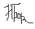

Туристическое агентство "Аполлония-Тур" предлагает
Туризм в болгарии
Болгария
привлекательная туристическая страна, которая предлагает разнообразные возможности для отдыха.
ОБЩАЯ ИНФОРМАЦИЯ
| Площадь: | 110 912 кв. км |
| Население: | 8.4 млн |
| Государственное устройство: | парламентская республика |
| Столица: | София (1.2 млн жителей) |
- Гостиницы всех категорий;
- Интересная ночная жизнь;
-
Много предложений из сферы культуры и искусства
- Кафедральный собор "
Святой Александр Невский " - самый большой на Балканском полуострове; - Такие церкви, как например,
Святой Недели, Сеяного Георгия, Святой Петки Самарджийской и др.; - Мемориальный комплекс "
Колокола " - Парк имени
царя Бориса - Памятник российского
императора Александра II-го
- Кафедральный собор "
- Множество ресторанов
| Звоните нам410 - 91 - 22 | Менеджер Борисова Н.Н. |  |